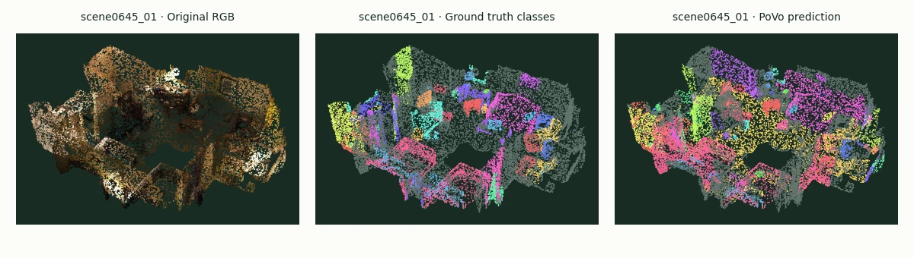

Semantic instance AP
12.40%183 classes with eligible ground truth3DV 2025 · Fondazione Bruno Kessler
Discover the objects.
Understand the scene.
Vocabulary-Free 3D Instance Segmentation
with Vision and Language Assistant
From posed images to 3D object instances. PoVo connects observations across views, separates objects in 3D, and recognizes them with instance crops and Qwen3.5.

Actual inference · Interactive 3D
See what the model sees.
Rotate the same point cloud and compare its color, human annotations, and predicted instances.
Loading real point-cloud data…
Drag to rotate · Scroll to zoom · Hover for labels
Selected showcase: 88.89% localized class accuracy (24/27). scene0645_01 has the highest class accuracy among validation scans with at least 20 predicted instances having ground-truth IoU ≥ 0.5. Accuracy uses the complete original cloud; RGB, ground truth, and predictions share the same 30,000 displayed point indices and class palette. This selected example is separate from the complete validation benchmark below.
Complete validation · Selected configuration
Recognize objects.
Measure every scene.
SAM2 proposals, point-curve clustering, matched ViT-L instance crops, and selective Qwen3.5 recognition.
Semantic instance AP50
19.97%Instance IoU threshold 0.5Semantic instance AP25
26.44%Instance IoU threshold 0.25Complete official ScanNet200 validation: 312 scans × 50 RGB-D views, 198 supplied foreground names and 16,910 predicted instances. Qwen3.5 reranks each ambiguous instance's top-five supplied labels. Localized class accuracy is 61.09% (2,291/3,750) at IoU ≥ 0.5; top-five candidate accuracy is 84.67%. Class-agnostic AP/AP50/AP25 is 12.21/23.91/42.09%.
Every scan completed; input fingerprints, masks, candidate lists, labels, and scores were verified. Settings were selected and evaluated on ScanNet validation, and the full split includes selection scenes. Configuration and results ↗ · Verified metrics JSON ↗
How PoVo works
From observations to instances.
Generate masks
SAM2 generates masks from 50 selected views. Cached CLIP features connect their image evidence to scene points.
Connect in 3D
Fuse image evidence at the points. Morton and Hilbert windows propose neighboring superpoints, checked against their actual boundaries.
Separate & recognize
Constrained spectral clustering forms instances. ViT-L combines instance and context crops with six text prompts per class; Qwen3.5 resolves ambiguous candidates.
Research
Cite PoVo.
The published paper evaluates vocabulary-free 3D instance segmentation on ScanNet200 and Replica. The experiments above describe subsequent implementation changes.
@inproceedings{mei2025povo,
title={Vocabulary-Free 3D Instance Segmentation
with Vision and Language Assistant},
author={Mei, Guofeng and Riz, Luigi and
Wang, Yiming and Poiesi, Fabio},
booktitle={International Conference on 3D Vision},
year={2025}
}